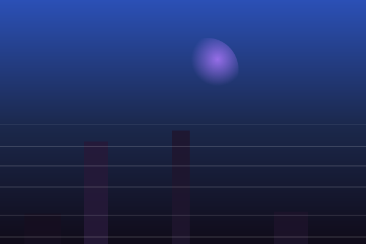

Nebula
The design language every lucya.systems app wears — the gallery, the configurator, and whatever comes next. Named after the one colour it rations: #5865F2, Nebula Blue. This page is the specimen book and the build instructions in one, and every control on it is live: the accent, the corners, the depth and the voice can all be re-run, or broken on purpose, to show what each rule is actually for.
-
Rule 01
Black ground, grey furniture, one accent
--accmarks state and nothing else: links, focus, active, selected, open, live. Everything that is merely furniture is--chromeor--label. -
Rule 02
Square corners, always
--radius: 0. Only genuinely round things — a status dot — opt out with aborder-radiusof their own. -
Rule 03
Depth from blur, not from darkness
Panes float on
--glass/--scrimover a drained backdrop. A surface that needs to read better gets more blur, never a darker fill. - Rule 04 Mono is the chrome, sans is the content Uppercase tracked mono marks the furniture around the content. Anything a person actually reads is Space Grotesk in sentence case.
-
Rule 05
Measure is rationed like colour
Every size, space, duration and blur comes off a named scale. A raw
pxin an app sheet is the same mistake as a raw hex — and the check for it is a grep, not a memory. - Rule 06 The environment can overrule the look Blur, translucency, motion and hover are capabilities, not guarantees. Each has a declared fallback, and every one is reached by redefining tokens — never by overriding rules.
This is what a lucya.systems app looks like. Not a wireframe — the shell
below is built from nebula.css, the same file a real app
would load. Read it top to bottom: a bar, a meta line of facts, a
heading, the measurements, then the content. Every band you see is
carrying information; there is no band whose job is decoration.
Capture
- Camera
- Fujifilm X100V
- Lens
- 23 mm f/2
- Aperture
- f/2.0
- Shutter
- 1/125 s
- ISO
- 1600
Tags
Count the accents: the selected segment, the selected tag, the one glyph in front of each eyebrow, the peak bar, the synced dot's cousin in the status colours, and the hairline under the top bar. Six state marks on a whole screen. Everything else — labels, counts, measurements, corner brackets, hovers — is grey. That ratio is the language.
One accent, and the discipline is not the hue — it is the count. The palette this replaced tinted every surface and every grey towards blue-violet, so a screen read as purple end to end and the real accents had nothing quiet to sit against. Nothing in the ground ramp carries a hue any more. Colour appears once, on purpose, where something carries state.
The three faces are derived, not picked: lightness moves along the source hue until each one clears 4.5:1 against the text it has to carry. A colour typed into a config file lands with the same guarantees as the built-in one — which is the whole reason an app may expose an accent knob at all.
The two groups, and the question that sorts them
Before colouring anything purple, ask: does it carry state? If it
doesn't, it is --chrome (hovers, brackets, HUD strokes) or
--label (the static mono furniture). Click a swatch to copy
its token name.
What breaking rule 01 looks like
Flip it and scroll. Nothing has changed except which elements are allowed the colour — same hue, same components, same layout. That second state is the one the operator rejected with "das Lila ist zwar schön, aber es ist etwas viel": with the furniture wearing it too, the accent stops meaning anything, and the content has nowhere quiet to sit.
- A link, and focus on anything.
- Active / selected / open — the current tab, the applied filter, the open menu row.
- A featured or pinned mark, and the tile outline that goes with it.
- A progress fill, a live counter, the value being watched right now.
- The one glyph in front of a section label.
- Section labels, counts, badges, measured values — those are
--label. - Hover states, corner brackets, HUD strokes — those are
--chrome. - Headings and page titles: hierarchy is weight and size, not hue.
- Borders, dividers, panel edges. A border is furniture.
- Icons in general. An icon is a label with a picture in it.
--acc, so a
per-app accent cannot repaint an instrument. The gallery's trip timeline
is the one that exists. Nothing outside such a module may use its
colours, and nothing inside it may use --acc.
--radius: 0, everywhere, with no soft variant hiding in a
component. Square is not permission for flat coloured tiles or dense
uppercase blocks, though — this is not Metro. Depth still comes from
rule 03; the corners are just never rounded off.
Rounding the corners costs more than the corners: the bracket idiom stops working. A corner bracket is a fragment of a right angle, and there is no right angle left to quote. Watch the cards below lose their frames when you flip it.
The brackets are --chrome, not the accent, and they
appear on hover and focus only — they are a frame, and a frame that is
always on every card is wallpaper. On a permanently framed group (a
curated set) they stay lit, because there they are what tells the set
from the loose grid under it.
Six tokens are the whole surface scale. --glass /
--glass-hi for panes over the page; --scrim /
--scrim-hi for chips laid on an image, where the
backdrop is whatever the picture happens to be there; --pane
for the app bar and --overlay for menus, which are the two
surfaces that must read over page content rather than over the
wallpaper. Each is paired with a step off the blur ladder
(--blur-1 to --blur-3), so “give it more
blur” is an actual move and not just advice.
A pane here is a fill, a blur and a hairline. It has no bevel and no gloss — no lit top edge, no wash falling down its face. Those are the two marks that make translucency read as Aero, a moulded sheet with a thickness to it, and they argue with rule 02: a bevel is a soft edge drawn on a hard one. What this language means by glass is a flat plane with the depth behind it, out of focus.
The picture behind this page is nova, the house artwork, and it is the one kind of backdrop served with the tint off. A photograph introduces a foreign hue that every blurred pane above it picks up — that cast is what the palette pass was about, and it is why the language's own default drains a wallpaper to near-grey. Nova has no foreign hue to introduce: it is drawn in the accent's own colour, so draining it removes the one thing it was made to say. Pull the tint down and watch that happen.
Both states are legible. Only one of them is still a page: buying
legibility with darkness turns the screen into a stack of black
rectangles and throws the backdrop away. Blur keeps the pane bright
and the wallpaper readable through it. When a surface is not reading,
the fix is more blur or the -hi step, never a darker fill.
Panes over the page

--scrim on a picture --scrim-hiThe distinction is not decorative: a chip on the page can rely on a known ground and a light tint, a chip on a picture cannot — it has to survive a white sky and a black doorway in the same frame, which is why the scrim is darker and the blur is tighter.
Where the blur is not available
Phones and weak hardware switch backdrop-filter off for the
GPU cost, and then opacity is the only thing left doing the work. That is
one rule, in one place: .fx-lite redefines the same six
tokens more opaque and sets the blur ladder to none.
Nothing else in the sheet knows about it. Try it in the
Full / Lite switch up in the bar.
Note which two go fully opaque. What is behind a card is the
wallpaper; what is behind the app bar is the page, scrolling. Without a
blur to average it, translucency over live content is not glass, it is a
smear — at .96 the title of this page still ghosted
through the bar, because 4 % of white over near-black is visible.
.fx-lite{
--glass: rgba(22,22,27,.86); /* was .36 + blur(20px) */
--glass-hi: rgba(36,36,44,.94);
--scrim: rgba(0,0,0,.78);
--scrim-hi: rgba(6,6,10,.88);
--pane: #04040a; /* page scrolls behind it */
--overlay: #0a0a0e; /* ditto */
--blur-1: none; --blur-2: none; --blur-3: none;
}
/* The same again for a visitor who asked the OS rather than
the page. This one lands before first paint. */
@media (prefers-reduced-transparency: reduce){ /* ... */ }
Three faces, three jobs, and the split is the line the whole stylesheet is sorted on. It took two corrections to find: stripping the chrome to sentence sans made a grid look unfinished, because the labels stopped separating the furniture from the content and dissolved into it.
f/2.0 · 1/125 s · ISO 1600
Sort by · Newest first The chrome around the content: section labels, counts, badges, dates, corner indices, filters, sort controls, meta lines, and every measured value. If it is a fact the software knows about itself, it is in this voice.
calc() against --display-scale: faces
disagree wildly about how much of the em they ink.
Flip it and look at the anatomy shell again. Nothing moved and nothing changed colour; the counts, the tags and the buttons simply stopped announcing that they are controls and readouts rather than content, and the screen went soft.
text-transform on an element
that carries data — a folder name, a filename, a user's search
query, an identifier. Casing it is restyling the data:
Pride_MUC_26 is not PRIDE_MUC_26. Uppercase is
for fixed UI words only.
Colour was rationed from the first day. Measure was not — and that is why
this chapter exists. Before the scales below, nebula.css
carried 23 distinct paddings, 13 gaps, 13 font sizes and 14 tracking
values, every one hand-typed. None of them was wrong. All of them were
unreferenceable: “the same as the gallery” was something you
had to remember rather than something you could point at, so a third app
could only drift.
Ten sizes between 9px and 15px is not a hierarchy anyone perceives. 10px and 10.5px are noise that reads as inconsistency — the reader cannot tell you what is wrong, only that something is.
Eight steps, roughly 1.5× apart, so two adjacent values are always
visibly different. If a layout wants something between two steps, the
layout is wrong, not the scale. --s-0 is not a
space — it is a bezel, the inset of a segmented track, and anything
a person would call “distance between two things” starts at
--s-1.
The token name carries the voice. --fs-chrome-* is
mono, uppercase and tracked; --fs-text-* is Space Grotesk
in sentence case. Reaching for the wrong one is then visible in the
source, not only on screen. And each --fs-chrome-N has
exactly one --tr-chrome-N beside it, because
tracking falls as size rises — that is a formula, not a
preference.
Nothing in the broken state is wrong by more than two or three pixels, and that is the entire demonstration. Flip it and look at the page above, not at this panel: the labels stop lining up with each other, the gaps stop rhyming, and the screen acquires a vagueness you cannot point at. A scale is not about any single value being right. It is about the same value being reachable twice.
Which is why the check is a grep rather than a memory — the
same way rule 01's is a count:
grep -oE '(padding|gap|margin|font-size|letter-spacing):[^;]*[0-9]+px' app.css
Nothing back means the app is speaking the language.
nebula.css itself returns nothing.
The component vocabulary, all live. Everything here is in
nebula.css under the class name shown — copy the file, use
the names, and a new app is already wearing the language.
Exactly one button in a row may be --primary: the one
that commits. Everything else hovers in --chrome, because
a button that merely opens a picker carries no state. Danger is a
hover state, not a resting colour — a delete button that is red
while nobody is touching it reads as an alarm on an idle screen.
One idiom for "pick one of these", wherever it appears. Tabs, a language selector and a three-state toggle are the same control doing the same job — giving each its own look is how two screens of one app stop looking related.
Filter: all · sorted by newest first. Both controls are live.
An applied filter and the current sort order are state, so both
wear the accent — the tag as a fill under black text (which is exactly
what --acc is derived to survive), the menu row on its
leading edge. A tick glyph or a filled row would be a second way of
saying the same thing.
The label is furniture (mono, tracked, --label) and
the help is prose (sans, sentence case) — rule 04 applied inside
a single component. The left border carries the state so a screen of
forty keys can be scanned without reading one of them: accent = set,
grey = unset, amber = staged.
Exposure
- Camera
- Sony A7C
- Lens
- 35 mm f/1.8
- Aperture
- f/1.8
- Shutter
- 1/60 s
- ISO
- 3200
- Taken
- 2025-12-07 18:44
Status
Panels stack hairline-to-hairline inside a .stack — one
pane of glass, one border round it and a hairline between the rows —
rather than floating as separate boxes each with a border of its own. The
key is prose; only the measured values take the mono voice
(.num). A camera name is something you read; an aperture
is something the software measured.
Reserved for screens where the page is an instrument — a capture view, a live monitor. It is the one place a blinking dot and a reticle are honest. Do not lift them into ordinary page chrome: an idle list with a blinking REC light on it is lying about what it is doing. The reticle flashes the accent while work is in flight — press the button to see it.
Inline SVG, never an <img>: an image is a closed
document, and nothing outside it can reach a path — no fill, no draw,
no split. Hover the first one and the two colour flanks pull apart in
steps(4, end) and snap back. The second is
--foot: a stamp, not a control, so it carries no ghosts
and does not move. Those two hexes are not palette colours and
appear on nothing but a copy of the mark itself.
No accent: an avatar is an identity, not a state (rule 01). The
letters are a name — data — so they are sans and uncased, and the frame
is furniture. The last one is --btn: it opens something,
so it is a real button and says so when it is open.
.seg answers pick one of these; this answers
is this on, and every settings screen needs both. On is a
state, so on is the accent as a fill. The word beside it is not
decoration: hue alone never says anything (rule 06), and the control is
a real <button role="switch" aria-checked> so a
screen reader hears what the word says. Its touch target is a
transparent margin — growing the track instead gives you a 44px box
with a 12px knob rattling inside it.
Rule 01 licenses the accent for progress fills; this is the fill. The
value rides a custom property (--p) set through the CSSOM,
because a strict CSP drops an inline style attribute
silently. The figure beside the bar is part of the component: a
bar with no number is a mood, and a screen reader reads
aria-valuenow, never a width. Amber and red are for a
quantity that has become a problem — they are statuses, not a theme.
Icon, name, one line of prose, then the controls — inside a
.stack, so the rows are separated by hairlines instead of
being a pile of boxes. The name is read, so it is sans; the icon box is
furniture. Below --bp-narrow the controls drop to their own
line rather than squeezing the prose to nothing.
| Album | Where | Photos | Indexed |
|---|---|---|---|
| Pride_MUC_26 | München, DE | 412 | 2026-07-12 |
| Kyoto_Spring | Kyoto, JP | 1 284 | 2026-04-03 |
| Hafenrunde | Hamburg, DE | 86 | 2026-02-28 |
The two voices in one component: the head is mono furniture, the cells
are what a person reads, and a measured column takes .num
so the digits line up down the page. The album names are data —
Pride_MUC_26 is not PRIDE_MUC_26 — which is
why nothing here cases a cell. Wrap it in something scrollable: a table
is the one thing that cannot reflow.
A real <dialog>, so the browser owns the top layer,
the focus trap and Escape — three things nobody reimplements correctly.
On --overlay like a menu, because it has to read over
whatever the page happens to have underneath. It is not a place to put
a screen: if it needs a heading, a scrollbar and three sections, it is
a page.
Its edge is --chrome, not the accent: a toast
reports that something happened, and reporting is not a state (rule
01 — two apps had this wrong before it was written down). The variants
are statuses, the same licence .field__error has, and each
carries a glyph as well as its colour. Two things it must never be: the
only place an outcome is shown — a message that vanishes has not told
anyone who was reading something else — or an error that needs a
decision. That is a .dlg.
The app bar says which app you are in; the rail says which part
of it, and unlike a menu it does not go away. The current section is a
state, so it is the accent, marked on the leading edge — the same mark
.menu__option already uses, because it is the same idea.
aria-current="page" is what a screen reader reads; the
class is only what the sheet paints. Narrow the window past
--bp-narrow and it becomes a strip that scrolls sideways,
with the marker on the bottom edge: a leading edge in a row points at
nothing.
.u-nocase is rule 04's missing tool. The rule — never
text-transform data — is easy to keep until data lands
inside furniture that is cased: a .menu__head, a
.tag, a .section__doc. Compare the two pairs
above. .u-offscreen is its opposite number for the
accessibility tree: in the layout and in a password manager's reach,
out of the eye's way, because display:none is what makes
both of them ignore it. Both live at the end of the sheet — a
utility declared before the component it corrects loses to it silently.
And [hidden] wins over every component's own display,
which is the one !important in the language.
The one screen every visitor sees and that covers nothing. It is not a
seventh rule — it is the six applied to a page that has to be decided
once and never again. nebula.css carries its looks; what an
app writes is the markup and the script.
One --glass card on the app's own backdrop, because
signing in is a door in the same building and not a lobby someone else
built. It is glass, not --overlay: it does not float over
anything, it is the page. Every part of it already existed —
.site-bg, .btn--primary, the input reset, the
.brand-text lockup — so the door cost the language almost
nothing new. The version sits on the card because behind a password the
footer is not reachable, and it is the first thing to check when
something behaves unlike its notes.
Refused puts the server's own sentence in the
role="alert" line and selects the field, so the next
attempt is simply typing again — no shake, no red border flash: the
words and the glyph carry it. Caps Lock is amber, not red,
because it is the reason a refusal is about to happen, and it is a
role="status" that must not interrupt. Locked counts
down from Retry-After and re-enables itself — a lockout
printed once and then left standing reads as broken. No answer is
worded as what it is; a network failure is not a wrong password.
Success fades the card over --boot-fade and drops it
to scale: .97, and only then navigates, so a document swap
becomes a hand-off instead of a white flash.
The query string is attacker-controlled and this page is
unauthenticated, so nothing from it is ever echoed: the parameter
only picks a key from a fixed table, and an unknown key says nothing at
all — press the last button. Each text names the cause and what
happens now, because landing on a sign-in page with no explanation reads
as the tool having thrown you out. And there is no next=:
an app with one URL gains nothing from it and gets an open-redirect sink.
What is lost across the door is which screen you were on, and that is
remembered on the app's side.
- An entrance animation — this screen covers no wait, and the field has
autofocus. - A shake, a pulsing button, a typing effect, a progress bar.
- A spinner for a sub-second request: the submit button disables, the label stays put.
- A success tick before the navigation.
- A "remember me" — how long a session lives is the server's decision.
- Social buttons, an illustration, marketing. If a mark states no fact, delete it.
- A modal on the app: nothing of the tool renders before there is a session to render it for.
Every one of those is a delay or a decoration on the screen people see
most often and want to leave soonest. The full list of what it
does — the parts, the states, the three movements it is allowed
— is the The door chapter in NEBULA.md.
Everything here was actually built, shipped, and taken back out. They are the failure modes this language keeps re-inventing, so they are worth recognising before writing the CSS rather than after.
- A segmented
FILE / CLASS / RDYreadout bar, an index number, a title and a bilingual ornament — four bands saying what one heading says. - Before adding a bordered, filled strip, count how many the page already stacks. Hierarchy is typographic: a heading is a heading, not a bar.
- Dashed "stamp" chips, a decorative
01, a slug in a second language nobody set — all removed. They carried no information. - A mark on a meta line is a hairline outline and a word. If you cannot say what fact it states, it is decoration.
- A pass that raised every surface's opacity was rejected outright: "nicht zu dunkle Hintergründe".
- When a pane does not read, reach for the blur or the
-histep. Never paint it darker.
- Bright amber and red on a black-and-grey page read as an alarm, not as information, and they fight the accent. Both are dulled on purpose.
- A status colour that is brighter than the accent has quietly become the accent.
- A colour or border
:hovercosts the first tap: the tap lands as a hover, the element repaints, and the visitor has to tap again. - Gate every colour hover behind
@media (hover: hover); on touch keep the movement only.
- Never animate
transformin a shared keyframe or an:activerule: a centred control already carries its owntranslate(-50%,-50%), and the animation throws it across the screen. - Use the independent
translate/scaleproperties, and list them in thetransition— a property not listed there does not transition at all.
Instructions for building a new lucya.systems app in Nebula. The same
text lives in nebula/NEBULA.md next to this page, which is
the file to read into context — this section is it, rendered.
Step 1 — Take the sheet, don't reinvent it
Copy nebula/nebula.css and nebula/assets/fonts/
into the new app's static directory and link the sheet first. It carries
the tokens, the base, and every component on this page. Your app's own
stylesheet loads after it and adds only what is genuinely new.
Do not fork the token block: if a value is wrong for every app, it is
wrong in the language and gets fixed there.
app/static/ nebula.css ← the language: tokens + base + components (copy verbatim) app.css ← this app's own layout and its own components only fa-icons.css ← generated glyph subset, if you use icons fonts/ ← static per-weight woff2 instances, never a variable font
Step 2 — The decision procedure
- Is this element carrying state? Current, selected, open, active,
focused, live, featured, in progress. Yes →
--acc. No → go on. - Is it interactive furniture? A hover, a corner bracket, a HUD
stroke, a frame. →
--chrome. - Is it a static label, count, badge or measured value? →
--label, in the mono voice, uppercase, tracked. - Is it something a person reads? → Space Grotesk, sentence case,
--text/--text-dim. - Does it sit on the page? →
--glass. On an image? →--scrim. Never an opaque fill. - Does it have corners? → they are square.
--radius: 0.
Step 3 — The rules that are not about looks
- Fonts are static per-weight woff2 instances, built from the
variable source, and
@font-facecarries nolocal(). Instantiating a variable face and searching the system fonts cost close to a second of a phone's first layout, under the entrance animations. Weight ranges (400 → 100-450, 500 → 451-550, 600 → 551-650, 700 → 651-900) so a request always lands on one file and never on a synthesised bold. - Gate the expensive effects. One JS check for weak hardware / data
saver / reduced motion sets
html.fx-lite, and lite mode redefines the four surface tokens instead of overriding rules. Background video, backdrop blur and long auto-advancing animations all hang off that one class. - Gate repainting hovers behind
@media (hover: hover), or they cost the first tap on every phone. - Assume a strict CSP (
style-src 'self'): inlinestyleattributes are silently dropped. Data-driven sizes ride SVG geometry attributes or CSS custom properties set from a stylesheet or script — never an inline attribute you assume will survive. - Never uppercase data.
text-transformbelongs on fixed UI words only, never on a name, path, filename or query. - One config vocabulary. If the app is themable, the knobs are
accent,wallpaper,wallpaper_tint,wallpaper_dimand the display face — the same names, and a hand-typed hex goes through the derivation below so it lands with the contrast guarantees rather than raw.
Step 4 — The accent derivation, if the app is themable
One colour in, three faces out, by moving only lightness along the
source hue until each face clears 4.5:1 against the text it has to carry.
This is the whole reason an accent knob can be exposed to a config file at
all. The showcase runs this exact function in JS; the gallery runs it in
Python as _accent_shades().
def accent_shades(rgb):
# --acc: small text on black AND a fill under black label text.
# Both readings want luminance, so a too-dark colour is LIFTED.
h, l, s = rgb_to_hls(*[v / 255 for v in rgb])
acc_l = l
while acc_l < 0.97 and contrast(hls_rgb(h, acc_l, s), BLACK) < 4.5:
acc_l += 0.02
# --acc-deep: the one face carrying WHITE text, so it goes the other
# way. Saturation is capped here alone: at full chroma a mid-lightness
# hue turns electric, which no other shade of the same colour does.
deep_s, deep_l = min(s, 0.78), min(acc_l, 0.58)
while deep_l > 0.12 and contrast(hls_rgb(h, deep_l, deep_s), WHITE) < 4.5:
deep_l -= 0.02
return {
"acc": hls_rgb(h, acc_l, s),
"deep": hls_rgb(h, deep_l, deep_s),
"soft": hls_rgb(h, acc_l + (1 - acc_l) * 0.42, s),
}
Step 5 — Ship checklist
- Count the accents on one screen. More than a handful means furniture has been painted with state colour — go back to step 2.
- Grep the new CSS for
border-radius. Every hit is eithervar(--radius)or a genuinely round thing. - Grep for opaque fills on floating surfaces. Every pane is
--glass/--scrimplus a blur. - Check the phone: blur off, hovers gated, no variable font, no
local(). - Read the screen with the CSS off. If the meta line does not still say real facts, it was a decoration bar.
- If the app has a sibling app, make the change in both stylesheets — they deploy separately and can never share a mount, so the language only stays one language by hand.
The brief, ready to paste
Hand this to Claude at the start of a session that will touch a lucya.systems interface.
This app wears NEBULA, the lucya.systems design language. Read nebula/NEBULA.md and use nebula/nebula.css as the base sheet. Do not fork the token block; your sheet loads after it and adds only what is genuinely new. Six rules: 1. Black ground, grey furniture, ONE accent (--acc). The accent marks STATE only: links, focus, active/selected/open, featured, live. Furniture is --chrome (hovers, brackets, HUD strokes) or --label (static mono furniture: labels, counts, badges, measured values). Before colouring something purple, ask whether it carries state. The accent never sits on its own tint: on an accent fill the label is --on-acc or --text. Reading copy bottoms out at --text-dim; --text-ghost is a ghost, not a text colour. 2. Square corners, always. --radius: 0. Only round things opt out. 3. Depth from blur, not darkness. Six surfaces: --glass/-hi (panes), --scrim/-hi (chips on a picture), --pane (the app bar), --overlay (menus). Each with a step off --blur-1..3. A pane that does not read gets more blur or the -hi step, never a darker fill. A pane is a fill, a blur and a hairline: NO bevel, NO gloss gradient - that is Aero, and it argues with rule 2. 4. Mono, uppercase, tracked = the chrome AROUND the content. Space Grotesk, sentence case = everything a person reads. The display face is the wordmark's voice and never a heading's. Use --fs-chrome-* vs --fs-text-*: the token name carries the voice. 5. Measure is rationed like colour. Every size, space, duration and blur comes off a named scale (--s-*, --fs-*, --tr-*, --dur-*, --blur-*). A raw px is the same mistake as a raw hex. Check with: grep -oE '(padding|gap|margin|font-size):[^;]*[0-9]+px' app.css 6. The environment can overrule the look. Blur, translucency, motion and hover are capabilities. Reach every fallback by REDEFINING TOKENS, never by overriding rules: .fx-lite, prefers-reduced-transparency, prefers-contrast, forced-colors, prefers-reduced-motion, (hover: none). Also: no local() in @font-face and no variable fonts (static per-weight woff2); assume a strict CSP so no inline style attributes; never text-transform data (names, paths, queries); every control is a real focusable element carrying aria-pressed/aria-selected next to its class; never signal state with hue alone.